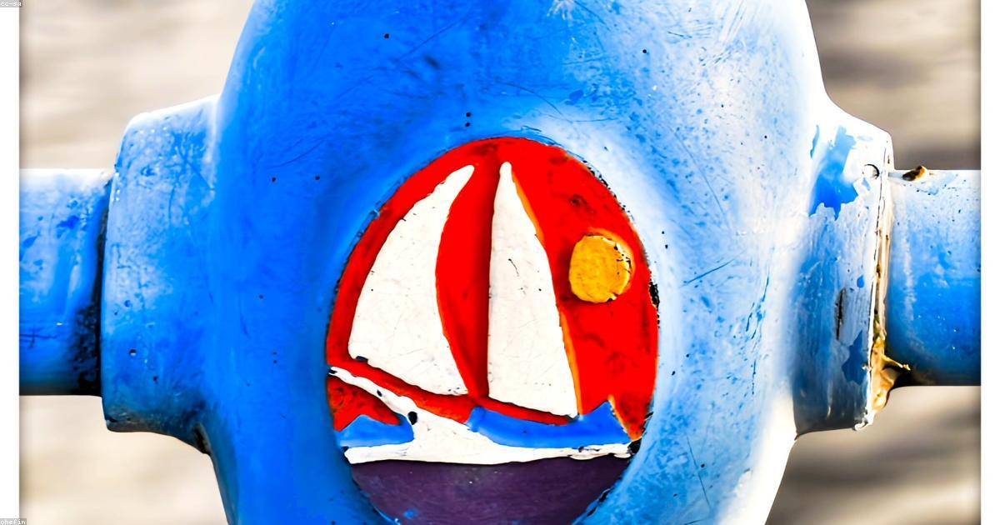

Estrategias esenciales para proteger tu inversión náutica del clima tropical del Caribe. Desde gestión de humedad hasta prevención de corrosión marina.

El clima tropical de Cartagena presenta condiciones únicas que aceleran el deterioro de embarcaciones: temperatura promedio de 28°C (82°F), humedad relativa del 85-90%, exposición UV intensa (índice 11-12), y ambiente salino constante. Sin un programa de mantenimiento preventivo estructurado, una embarcación puede experimentar degradación significativa en solo 6-12 meses.
Con humedad relativa constantemente sobre 80%, el interior de embarcaciones cerradas puede alcanzar 95%+ en días sin ventilación. Esto crea ambiente ideal para moho, mildew y corrosión de componentes electrónicos.
A 11° de latitud norte, Cartagena recibe radiación UV equivalente a 150% comparado con latitudes medias (35-45°). Los rayos UV degradan gelcoat, vinilos, lonas, plásticos y causan decoloración de tapicería en solo 2-3 meses sin protección.
El agua salada es electrolito perfecto para corrosión galvánica. Metales disímiles (acero inox + aluminio) en contacto con agua salada crean corriente eléctrica que acelera oxidación.
| Componente | Riesgo de Corrosión | Mantenimiento Preventivo |
|---|---|---|
| Motores Fuera de Borda | Alto (bloque, hélice) | Enjuague con agua dulce después de cada uso, anticorrosivo spray mensual |
| Herrajes de Deck | Medio | Lavado semanal con agua dulce, cera protectora cada 2 meses |
| Anclas y Cadenas | Muy Alto | Galvanizado en caliente cada 18-24 meses, inspección trimestral |
| Sistema Eléctrico | Medio (terminales) | Spray dieléctrico en conexiones, revisión semestral de cables |
| Ánodos de Sacrificio | Diseñado para corroerse | Reemplazar cuando estén 50% consumidos (cada 12-18 meses) |
A diferencia de climas templados donde varada anual es suficiente, en Cartagena se recomienda inspección submarina cada 6 meses para detectar incrustaciones tempranas (barnacles, algas) y daños de gelcoat bajo línea de flotación.
Colombia Boat Detailing ofrece planes de mantenimiento preventivo mensual que incluyen lavado técnico, inspección de 40 puntos, tratamiento anticorrosivo y reportes fotográficos detallados.
Solicitar Plan de MantenimientoLos motores marinos operando en ambiente salino tropical requieren mantenimiento más frecuente que especificaciones de fábrica (diseñadas para climas templados).
El mildew (moho superficial) aparece en 72 horas bajo condiciones de alta humedad. Una vez establecido, las esporas se expanden rápidamente por toda la cabina.
Un programa de mantenimiento preventivo bien ejecutado cuesta aproximadamente $200-400/mes para yate de 35-45 pies. Comparado con reparaciones correctivas (motor reconstruido $8,000-15,000, repintado completo $12,000-25,000, reemplazo de tapicería $5,000-10,000), representa inversión inteligente.
En el ambiente tropical agresivo de Cartagena, el mantenimiento preventivo no es opcional—es esencial para preservar tu inversión. La diferencia entre embarcaciones bien mantenidas y descuidadas se hace visible en solo 6-12 meses: oxidación generalizada, tapicería con mildew, gelcoat deteriorado y sistemas mecánicos comprometidos.
Implementar un programa estructurado mensual con inspecciones trimestrales profesionales garantiza que tu embarcación mantenga condición showroom año tras año, maximiza vida útil de componentes, y preserva valor de reventa. En el trópico, el mejor momento para reparar es antes de que algo falle.
Especialistas en protección y restauración náutica